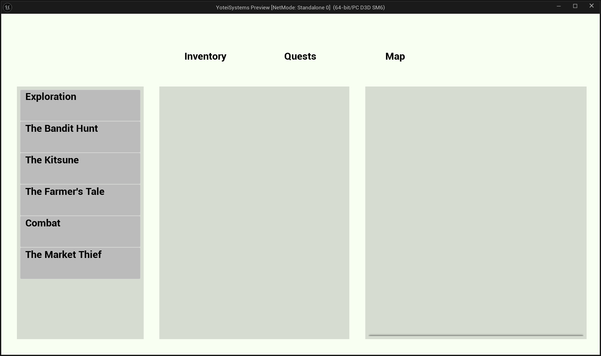
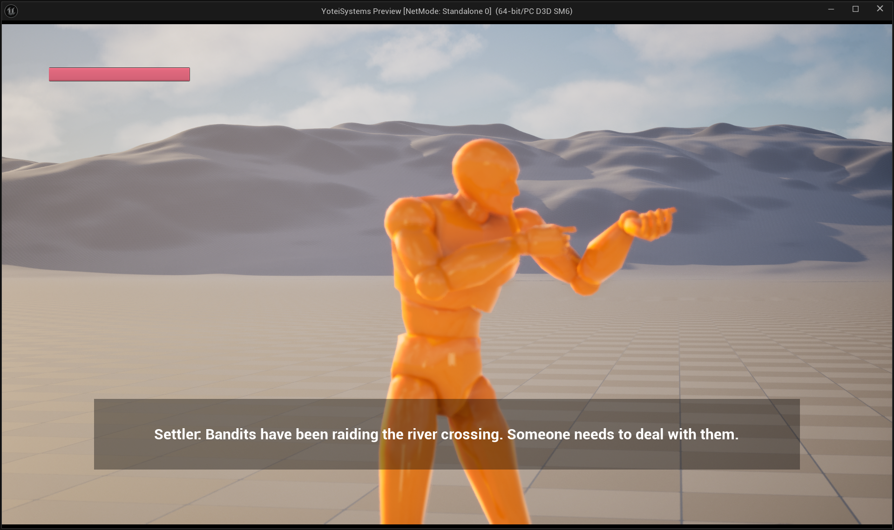
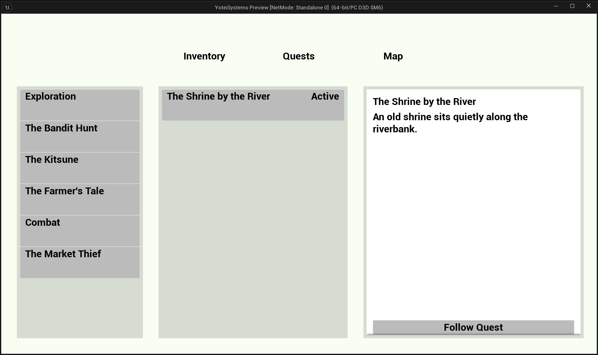

A dynamic, weighted quest director inspired by Ghost of Tsushima and Ghost of Yotei. Built Blueprint-only in Unreal Engine 5.7 using real production patterns: event dispatchers, data-driven content, and a catch-up mechanic that adjusts pacing based on the player's power vs the world's difficulty.
Unreal Engine 5.7In Progress
Overview
Unreal Engine 5.7In Development
A quest system built in Unreal Engine 5.7, Blueprint-only, designed around the same dynamic content-surfacing logic used in Ghost of Tsushima and Ghost of Yotei. The system acts as a weighted deck of cards: the game draws a quest category based on how the player's power compares to the world's difficulty, so pacing always serves the player's progression rather than following a fixed script.
▶Project devlog - paste YouTube embed ID here
Project devlog, overall system demo running in-engine
What's Done
Quest Director
✓ Done
Weighted Draw
✓ Done
Quest UI / Log
✓ Done
Dialogue System
✓ Done
Two-Shot Camera
✓ Done
Settler Trigger
⟳ In Dev
Camp Trigger
Planned
Bounty Board
Planned
Patrol Trigger
Planned
Ally Recruitment
Planned
In-Engine Screenshots

Quest Log open in Pause Menu

Auto-advance dialogue with two-shot camera
The Concept
Unreal Engine 5.7
Instead of scripting which quest the player gets next, the system draws from a pool of available quests using category weights that shift based on the player's situation. The director is invisible to the player; from their perspective, the world just keeps offering something interesting at the right time.
The Four Card Types
Category
Purpose
Main Quest
Advances the primary story arc. High weight when the player is ahead of the curve.
Side Quest
Unlocks allies, gear, and relationships. High weight when the player needs to catch up.
Exploration
Region-specific content, secrets, lore. Drawn when other pools are thin.
Combat
Bounties, patrol hunts, arena challenges. Drawn to spike tension or reward aggression.
How Weights Shift
Each region has a difficulty level. The player has a power level. The gap between them drives how category weights are calculated:
Player power below region difficulty: Side Quest and Exploration weights rise. The game surfaces quests that give allies, gear, and skills to close the gap.
Player power above region difficulty: Main Quest weight rises. The game trusts the player is strong enough and pushes the story forward.
Player power equal to region difficulty: balanced distribution across all four categories.
Design reference: this is the same philosophy as Left 4 Dead's AI Director, a hidden system that reads the player's state and adjusts the experience accordingly rather than scripting every beat by hand. Ghost of Yotei uses it to surface quests; Left 4 Dead used it to place enemies. The underlying pattern is the same.
How It's Built
Every widget subscribes to an Event Dispatcher and only updates when something changes. Nothing reads state in Tick.
BP_YoteiGameInstance is the only place runtime quest state lives. No system caches a copy.
All quest content lives in a JSON-imported Data Table. Adding a quest means adding a row, not a new Blueprint asset.
Every system is built so new features add nodes and fields rather than rewiring what already works.
System Map
Unreal Engine 5.7
How all the pieces connect, from the moment something triggers a draw to the moment the player sees a new quest in their log.
Quest System Pipeline
Triggers
🏕 Camp Visitor
🧑 Settler NPC
📌 Bounty Board
⚔️ Last Enemy
→
Quest Director
1
Compute category weights from PlayerPowerLevel vs RegionDifficulty
2
Weighted random roll across available categories
3
Get available quests for picked category in current region
4
If pool empty, remove category and re-roll. Repeat until drawn or exhausted.
→
Game Instance
ActiveQuests[ ]
CompletedQuests[ ]
TrackedQuest
OnQuestUnlocked OnQuestCompleted (dispatchers)
→
Quest UI
WBP_QuestTab
WBP_QuestSection
WBP_QuestEntry
WBP_QuestDetail
How Data Flows
Triggers never talk to the UI directly. They call DrawAndUnlockQuest on the Quest Director, and everything downstream reacts to the dispatchers the Game Instance broadcasts.
The Quest UI never polls for state. Every widget binds to OnQuestUnlocked and OnQuestCompleted in Event Construct, so updates arrive as events rather than being requested on a timer.
The re-roll loop is bounded. If all four categories are exhausted with no valid quests remaining, the function returns None cleanly. The trigger handles this gracefully rather than crashing or looping.
The Dialogue System sits beside this pipeline, not inside it. Triggers that involve dialogue (Settler, Camp) call the Dialogue System first; the quest draw fires at the end of the conversation, as the payoff.
Quest Director
Unreal Engine 5.7Done
QuestManager is a Game Instance Subsystem that owns all runtime quest state and the weighted draw logic. It is the single piece every trigger calls, and the single source every widget reads from.
Quest Data Structure
Field
Type
Purpose
Title
Text
Display name shown in the Quest Log
Description
Text
Journal entry text shown in the detail panel
Category
E_QuestCategory
Main / Side / Exploration / Combat. Drives the weighted draw.
Region
E_Region
Which region the quest belongs to. Filters the draw pool by location.
QuestLine
Name
Groups quests under a named arc in the log (e.g. "The River Valley Tales")
Prerequisites
Array of Name
Row names that must be completed before this quest can be drawn
NextQuest
Name
Auto-unlocks this row on completion, enabling chain quests
DrawAndUnlockQuest
Input: CurrentRegion (E_Region)
Output: DrawnQuest (BP_QuestData ref) or None
1. ComputeCategoryWeights(Region)
PlayerDelta = PlayerPowerLevel - RegionDifficultyLevel
Negative delta → raise Side + Exploration weights
Positive delta → raise Main weight
Returns: MainWeight, SideWeight, ExplorationWeight, CombatWeight
2. RemainingCategories = [Main, Side, Exploration, Combat]
3. WHILE RemainingCategories not empty:
a. TotalWeight = sum of weights for remaining categories
b. RandomRoll = Random(0, TotalWeight)
c. Walk categories, accumulate RunningSum
First category where RunningSum >= RandomRoll = PickedCategory
d. Pool = GetAvailableQuests(PickedCategory, Region)
Filters out completed quests + quests with unmet prerequisites
e. IF Pool not empty:
Draw random quest from Pool
Add to GameInstance.ActiveQuests[]
Broadcast OnQuestUnlocked
RETURN DrawnQuest
f. ELSE:
Remove PickedCategory from RemainingCategories, continue
4. IF all categories exhausted: RETURN None
Why re-roll instead of returning None on an empty pool? If the player has completed all Side Quests in a region, a Side Quest draw should silently fall through to the next category rather than giving the player nothing. The re-roll loop ensures the game always surfaces something as long as any valid quest exists anywhere in the current region's pool.
What the Subsystem Tracks
Variable
Type
Description
ActiveQuests
Array of BP_QuestData
Quests currently unlocked and visible in the log
CompletedQuests
Array of Name
Row names of completed quests. Used to filter draw pools and check prerequisites.
TrackedQuest
BP_QuestData ref
The quest currently pinned to the HUD tracker
PlayerPowerLevel
Integer
Updated by the progression system. Drives weight computation.
Demo
DrawAndUnlockQuest running across different PlayerPowerLevel values, showing the category shift
Triggers
Unreal Engine 5.7
Four systems call DrawAndUnlockQuest, each in its own flavor. The director doesn't care who called it; the trigger is just the context that makes the draw feel earned rather than arbitrary.
🏕
Camp Visitor
Planned
A random NPC arrives at a campfire drawn from a weighted visitor table. They open a short dialogue exchange that ends with a quest draw. The visitor type (wanderer, merchant, fugitive) flavors which categories they can surface.
🧑
Settler NPC
In Dev
A named NPC in a settlement the player can approach. Interact with them, go through a short dialogue, and a quest is drawn. Closest to done: the Interaction System is already wired, just needs the draw hook.
📌
Bounty Board
Planned
A physical board actor the player interacts with. Draws directly from the Combat category with no dialogue, giving the player an on-demand way to surface combat quests without waiting for a random trigger.
⚔️
Last Enemy / Interrogation
Planned
The last surviving enemy of a patrol squad is kept alive during combat. After a brief interrogation dialogue, a quest is drawn. Requires the enemy squad tracking system to know when exactly one remains.
Dependency note: Camp and Patrol both need systems of their own before they can call the draw. Camp needs the weighted-visitor-table logic. Patrol needs squad and last-enemy detection. Settler and Bounty Board have no new dependencies and will ship first.
Quest UI
Unreal Engine 5.7Done
The Quest Log lives inside the Pause Menu and uses a three-box layout: questline sections (Box 1), quest entries for the selected section (Box 2), and a detail panel for the selected entry (Box 3).
Widget Hierarchy
WBP_PauseMenu
└── Widget Switcher (Tab index 1: Quests)
└── WBP_QuestTab
├── Box 1, ScrollBox of WBP_QuestSection (one per questline)
│ └── WBP_QuestSection bubbles OnSectionClicked
├── Box 2, ScrollBox of WBP_QuestEntry (one per quest in section)
│ └── WBP_QuestEntry bubbles OnEntryClicked
└── Box 3, WBP_QuestDetail (persistent, updated in place)
Discovered Quests Only
Only discovered questlines appear in the log. Showing "The Kitsune's Trial" before the player has encountered it would spoil that the storyline exists at all. The log builds from GameInstance.ActiveQuests[] and CompletedQuests[], grouped by the QuestLine field. If you have no quests from a questline, that questline doesn't exist in your log yet.
How Updates Work
Box 3 holds one persistent WBP_QuestDetail instance, created once in Event Construct and updated in place. It never gets rebuilt.
Box 1 and Box 2 do get rebuilt on each section/entry click via RefreshQuestList and RefreshEntryList.
Clicking a section only rebuilds Box 2. The detail panel only updates when a specific quest entry is clicked, so switching sections leaves whatever is showing in Box 3 alone until the player picks a quest.
Tab Key Fix
The pause menu toggle lives in BP_PlayerController, not BP_PlayerCharacter. Character input stops processing once Set Game Paused is active; a PlayerController is not affected by pause state.
Closing is handled by WBP_PauseMenu's own On Preview Key Down override, not through a Controller bool. This sidesteps the state-desync bug where Tab would get stuck only ever opening the menu.
WBP_QuestTab, three-box layout with section, entries, and detail panel

WBP_QuestDetail, stage text and track button
Dialogue System
Unreal Engine 5.7Done
A Yotei-style auto-advance system. Lines play through on a timer derived from the voice clip duration, no Continue button. The only player input available is hold-to-skip the entire conversation.
Design reference: Ghost of Yotei's dialogue is fully automated. Lines play on their own, you cannot advance line by line, and the only available input is hold-to-skip the whole conversation. This system matches that exactly.
Line Timing
Line duration is MAX(GetSoundDuration(VoiceClip), MinLineDuration). The minimum guarantees that silent test rows hold long enough to read.
MinLineDuration defaults to 2.5 seconds.
A timer fires AdvanceDialogue, which reads NextLineID. If it's an empty Name, the conversation ends. If it has a value, the next line loads and the timer resets.
Auto-advance dialogue running with two mannequins and the two-shot camera
Creation order gotcha:WBP_DialogueBox must be created at level start in BeginPlay, not on first Interact. If it is created on Interact, its Bind Event won't be listening in time for that first call. The first line fires, nothing shows, and it is difficult to trace because the widget exists by the time you check.
Two-Shot Camera
Unreal Engine 5.7Done
BP_DialogueCamera is a CineCameraActor subclass repositioned by ActivateDialogueCamera at the start of every conversation. It places itself at the midpoint between the speaker and the player, offset to the side and slightly up, then looks at the midpoint to frame both characters.
Ally recruitment: the payoff the Quest Director was built to deliver. A Side Quest completion hands over an ally, completing the catch-up loop the weighted system promises.
Dependency Order
Settler Trigger (near done, no new dependencies)
↓
Camp Trigger (needs visitor table logic)
Bounty Board (no new dependencies)
↓
Combat System
↓
Enemy NPC (needs Combat)
Patrol Trigger (needs Enemy NPC squad tracking)
↓
Ally Recruitment (needs Quest completion hook + NPC result)
Other Systems Needed
Inventory system, prerequisite for different weapons and equipment rewards
Map system, prerequisite for the Follow Quest tracker marker
Enemy types and camps, for the liberating-nation mechanic